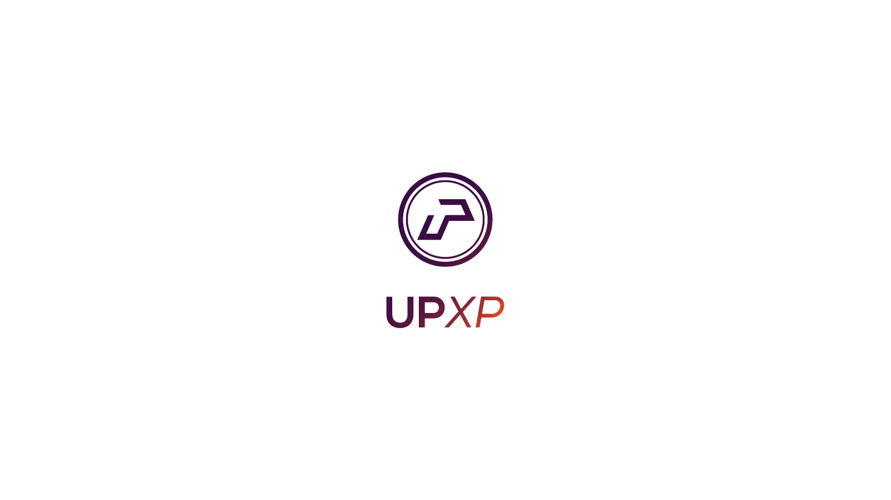
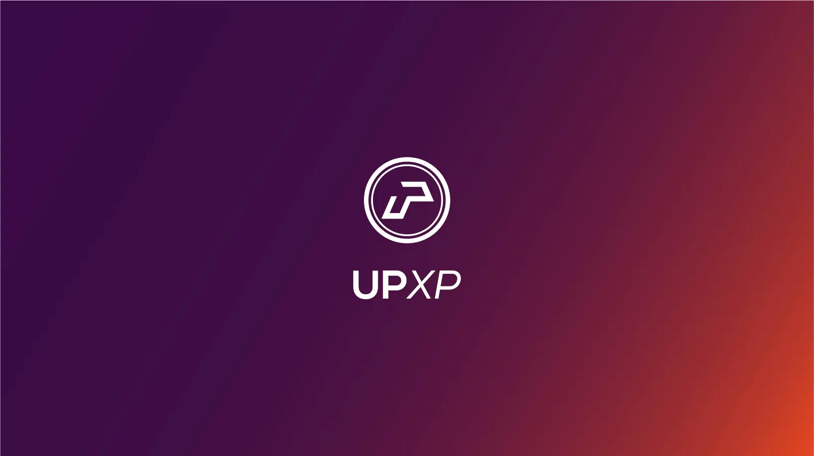
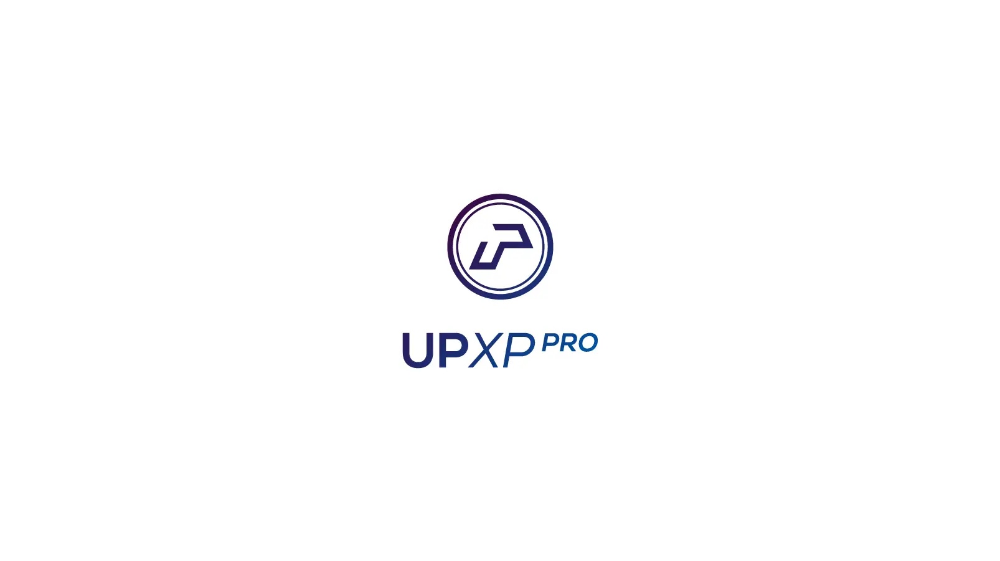
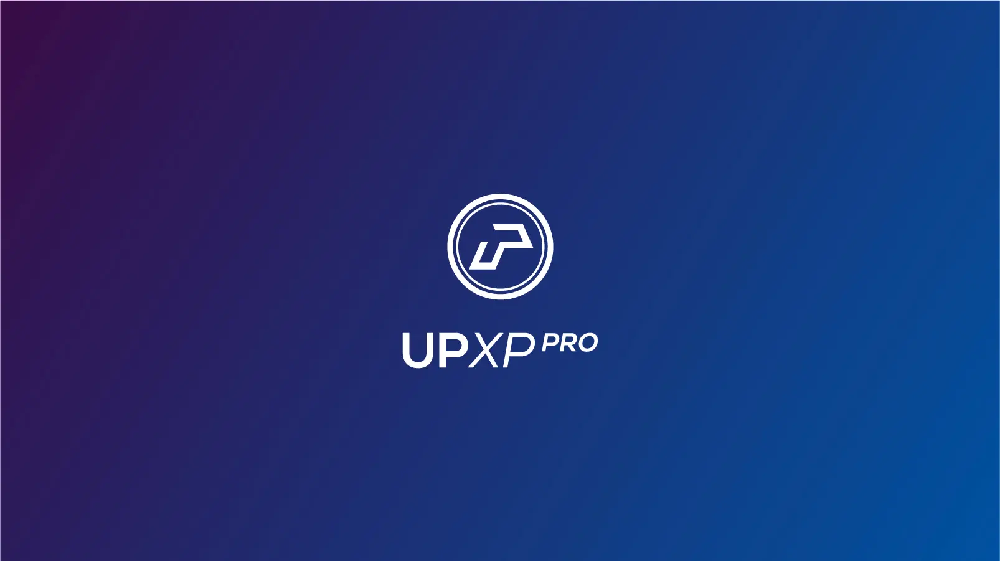
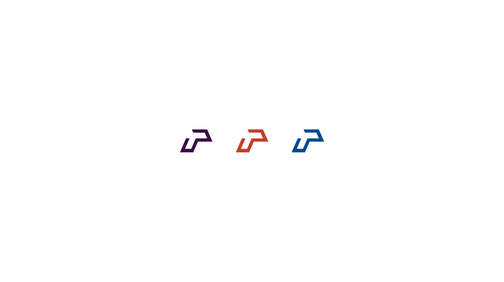
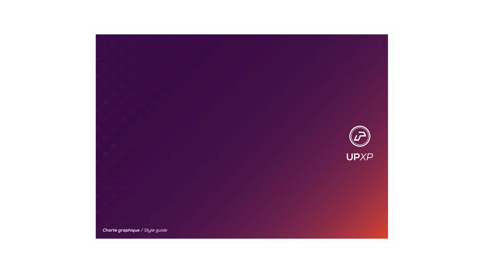
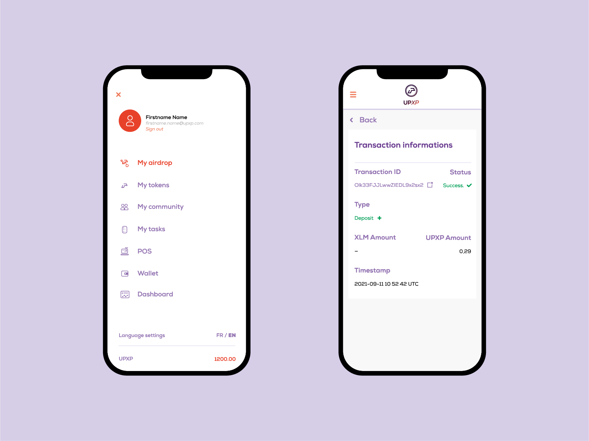
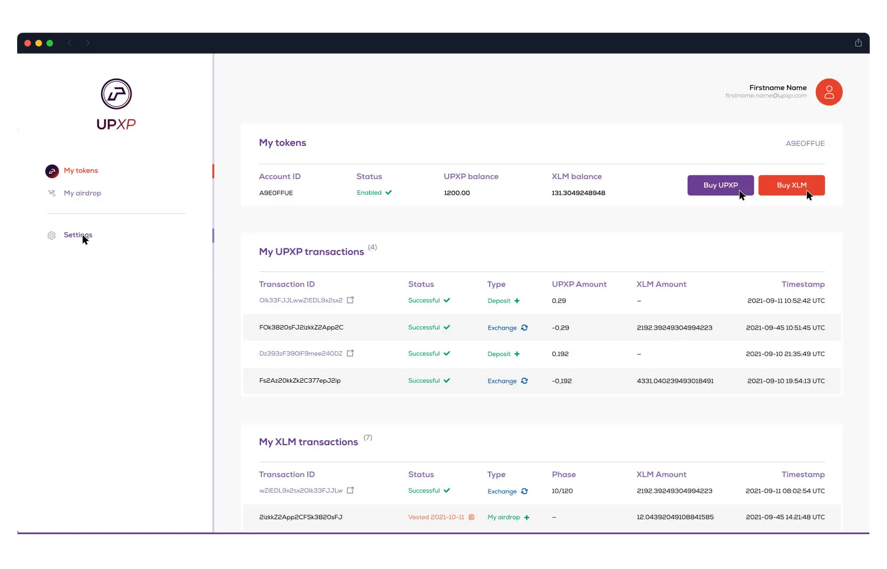
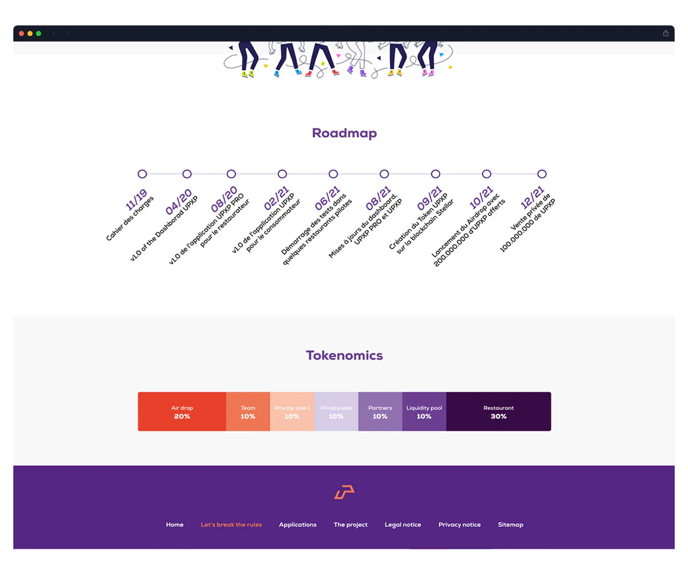
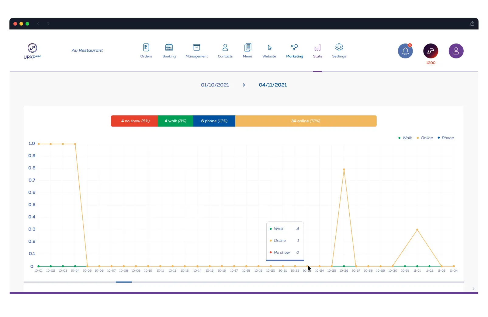

UPXP — Identité Visuelle & Design d'Interface UI/UX
UPXP propose une solution de fidélisation innovante basée sur la cryptomonnaie. UPXP récompense les clients qui commandent et réservent directement depuis le site des restaurants partenaires en leur versant de la cryptomonnaie, utilisable dans tout l'écosystème UPXP. Mise en place de l'identité complète, déclinée sur plusieurs interfaces web essentielles au projet.
Logo
Le logo utilise le U et le P de façon stylisée. Décliné en deux versions : une classique et une professionnelle. L'ensemble devant également représenter une monnaie virtuelle.





Charte graphique
La complexité d'avoir deux versions de logo (classique et pro) rend les erreurs plus communes. C'est là que la charte graphique prend tout son sens, elle indique clairement les utilisations possibles du logo en fonction des situations, des couleurs et des typos.
Cliquez pour ouvrir le fichier PDF (9 pages).

Portefeuille (Ordinateur & mobile)
Le wallet permet de gérer son portefeuille de fonds en cryptomonnaie, effectuer des transferts, faire des achats de monnaies entres autres.


Cliquez pour ouvrir le fichier PDF (15 écrans).

Site vitrine one page
Site one page simple pour mettre en avant le projet, les investisseurs et la roadmap.
Cliquez pour ouvrir le fichier PDF (1 écran).

Tableau de bord (Ordinateur & mobile)
Dashboard permettant de gérer côté pro tout un panel de paramètres, allant des commandes, aux managements, à la conception des menus et bien plus.
Cliquez pour ouvrir le fichier PDF (40 écrans).
